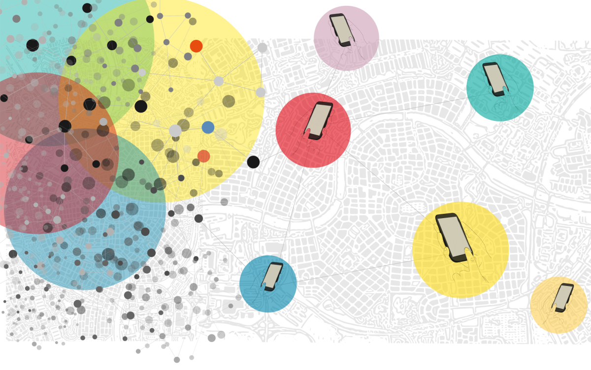
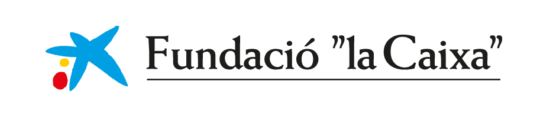

About
This web portal has been created as part of the Big Mosquito Bytes project, funded by Fundació ”la Caixa” and implemented by CEAB-CSIC. UPF, MPIDR, CNE CIBERSP/ISCIII, and CREAF in order to reduce the health risk posed by the presence of the tiger mosquito, capable of transmitting dengue, Zika or chikungunya. The project is focussed on the factors that affect the transmission of these viruses.
The portal has also received co-financing from the Next Generation EU funds through the Recovery, Transformation, and Resilience Plan (PRTR) for the development of entomological surveillance tools to be implemented in Spain based on citizen science, validated by field studies that combine with mosquito-borne disease surveillance and control. These tools have been designed as a new information system for the Public Health Surveillance Network of the Center for the Coordination of Health Alerts and Emergencies (CCAES) of the Ministry of Health of Spain.
Many components can contribute to the spread of a mosquito-borne virus. On the one hand, there are factors that correspond to the mosquito, including its present in an area, its abundance, the climatic conditions that favor population growth, its period of daily activity and its seasonality throughout the year. On the other hand, there are factors related to people, including the distribution of human populations, their density, daily movements, travel, lifestyles, and other socioeconomic variables. The intersection of all of these factors modulates mosquito-human interaction, and understanding this modulation is vital to understand the transmission of these viruses.
Big Mosquito Bytes uses citizen science and big data to predict in real time where there is the highest density of human-mosquito interactions, and to analyze where it is most likely that an epidemic outbreak may develop, based on a few isolated cases. The final objective is to provide an early warning tool to public health agencies that operate in the different territorial areas of the country, so that they identify where there is a greater risk of transmission. This will allow for more targeted and effective entomological and health management, considering that improving vector management of these diseases is, today, the best vaccine to protect human populations.
With this objective, we are working on the development of dynamic and spatial mathematical models that evaluate public health risks on an ongoing basis. The models will be fed with real-time data from the Mosquito Alert citizen science program, information from mosquito control services, climate and environmental data, as well as sociodemographic data from the human population. The models will also include human mobility data from data obtained from Twitter (geolocated tweets), mobile phones and other sources, as well as the updating of epidemiological data, reporting infected cases, both local and imported cases. from areas where diseases are endemic.
Socioeconomic inequality and inequality of health risks in human-mosquito interaction
The project will analyze, with particular attention, whether the growing social inequality in urban areas translates into inequality of health risks in relation to mosquito-borne diseases. In particular, the incidence that certain variables, linked to social class and gender, have on human-mosquito interaction will be studied. Detecting these factors will allow us to propose actions that better mitigate these socially differential risks.
All this information will be integrated and provided in real time to public health agencies in the form of risk maps that will be presented on a privately managed public health portal, but also to the general public. The development of this tool will be carried out in collaboration with the Center for the Coordination of Health Alerts and Emergencies (CCAES), the Catalan Public Health Agency (ASPCAT), and the Barcelona Public Health Agency (ASPB).
The project is made up of an interdisciplinary team that includes ecologists, sociodemographers, epidemiologists, entomologists, data scientists and computer developers from national and international research institutions (Germany).